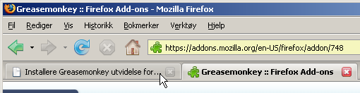
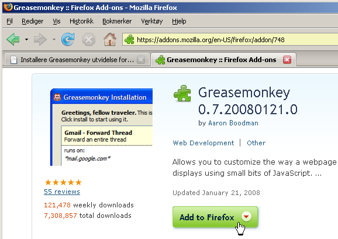
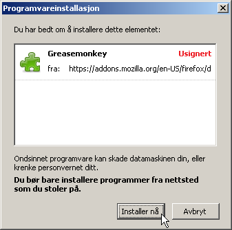
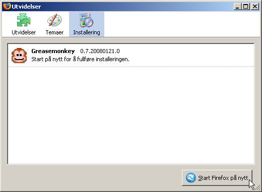
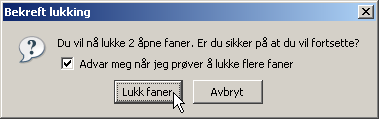

For å installere Greasemonkey følger du disse stegene:
- Gå til Gresemonkeys installasjonsside og følg resten av instruksene under. Siden vil mest sansynlig bli åpnet i en ny fane. For å komme tilbake til denne installasjonsinstruksen klikker du simpelthen på fanetittelen for denne siden. 
- Klikk Add to Firefox for å starte utvidelseinstallasjonen. 
- Etter 3 sekunder kan man klikke på Installer nå for å starte installasjonen. 
- For å ta i bruk Greasemonkey må man starte Firefox på nytt. Klikk Start Firefox på nytt for å gjøre dette umiddelbart. 
- Hvis du blir bedt om å bekrefte lukking av faner gjør du dette ved å klikke på Lukk faner 
- Etter omstart av Firefox er du nå klar for å installere tillegg som gir deg ny funksjonalitet på Urørt.